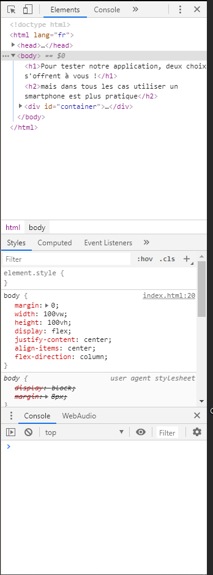

Pour tester notre application, deux choix s'offrent à vous !
mais dans tous les cas utiliser un smartphone est plus pratique
Il est possible de télécharger l'APK :
Pour voir le résultat suite à l'export du projet Cordova, cliquez sur le bouton suivant. Si vous souhaitez essayer sur sur votre smartphone, allez probablement être confrontés à diverses demandes d'autorisation.
Télécharger l'APK
Le code est disponible sur le GitHub :
Code source du projet Cordova
Éxécuter l'application dans le navigateur :
Cette solution est la plus simple. Afin de pouvoir profiter pleinement de l'application, vous allez devoir utiliser l'outil de développement de votre navigateur web. Nous vous conseillosn d'utiliser un navigateurs suivants : Chrome, Firefox, Opera. Si vous n'y arrivez pas, pas de soucis, il vous suffit juste de redimensionner votre navigateur au dimensions d'un smartphone.
appuyer sur F12 =>

appuyer sur la tablette =>

ALLER SUR L'APPLICATION VIA LE NAVIGATEUR